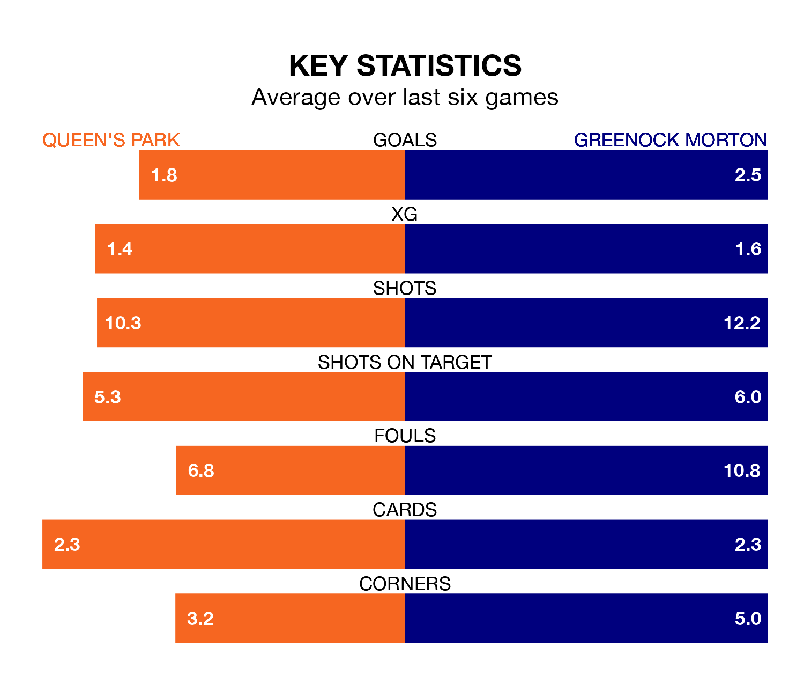

Greenock Morton face Queen's Park on Saturday seeking to protect their formidable unbeaten run in the Championship.
The Ton are unbeaten in 10, with seven wins and three draws, ahead of the 3pm kick-off.
They face a Queen's Park team who have won four and drawn one over the same number of games.
In Ruari Paton, Queen's Park have the league's most on-form striker so far this season. He has notched 11 goals in 23 appearances.
His goal rate of one every 187 minutes is slightly quicker than that of Robbie Muirhead, Greenock Morton's top scorer with a goal every 190 minutes, and a total of nine goals in 20 games.
With 31 goals in 23 games so far this season, the Spiders are scoring at below the league average rate with 1.3 goals per game. And they are conceding more than average, letting in 41 goals at a rate of 1.8 per game.
The Ton, meanwhile, are above average scorers, with 1.5 goals per game, compared to a league average of 1.4. They have conceded 1.2 goals per game.
In the last 10 years, Queen's Park and Greenock Morton have played each other on nine occasions. Queen's Park won one of them, Greenock Morton five, and they drew three times.
On average, the Spiders scored 1.1 goals and the Ton 1.4 in those matches.
Their last meeting was on December 16, when Greenock Morton won 1-0 at home.
The visitors are fourth in the table after 22 games, of which they have won nine and drawn five, earning 32 points.
The home team are two places behind Greenock Morton in sixth, with seven wins and five draws putting them on 26 points.
Queen's Park's last match was on February 10, a 3-0 win against Dunfermline Athletic, with Dominic Thomas, Jack Turner and MacKenzie Carse getting the goals for the Spiders.
Greenock Morton beat Dunfermline Athletic 5-0 last time out, on February 3, with Darragh O'Connor (two), Jack Baird (two) and Michael Garrity on the scoresheet.
Updated: 13:30 (UTC), 12/02/24